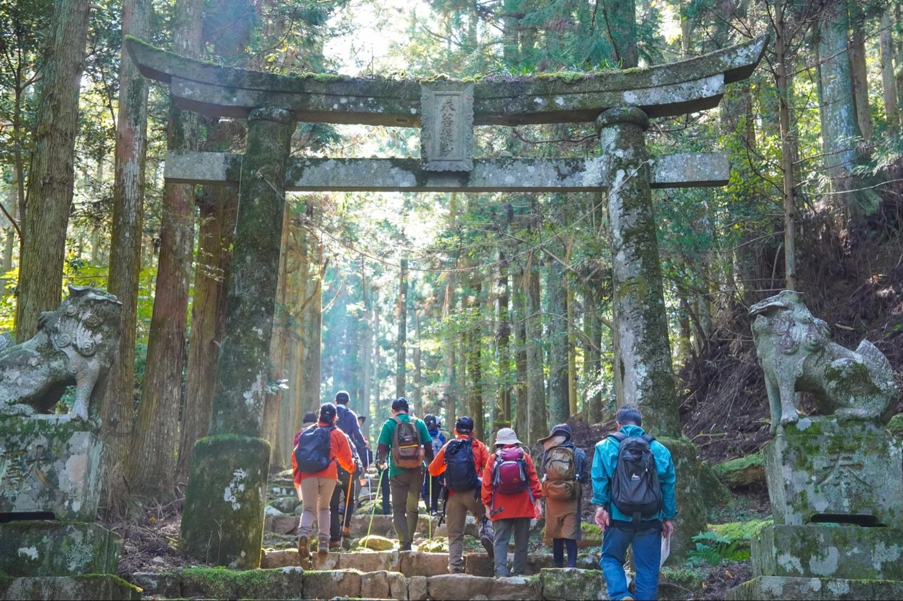
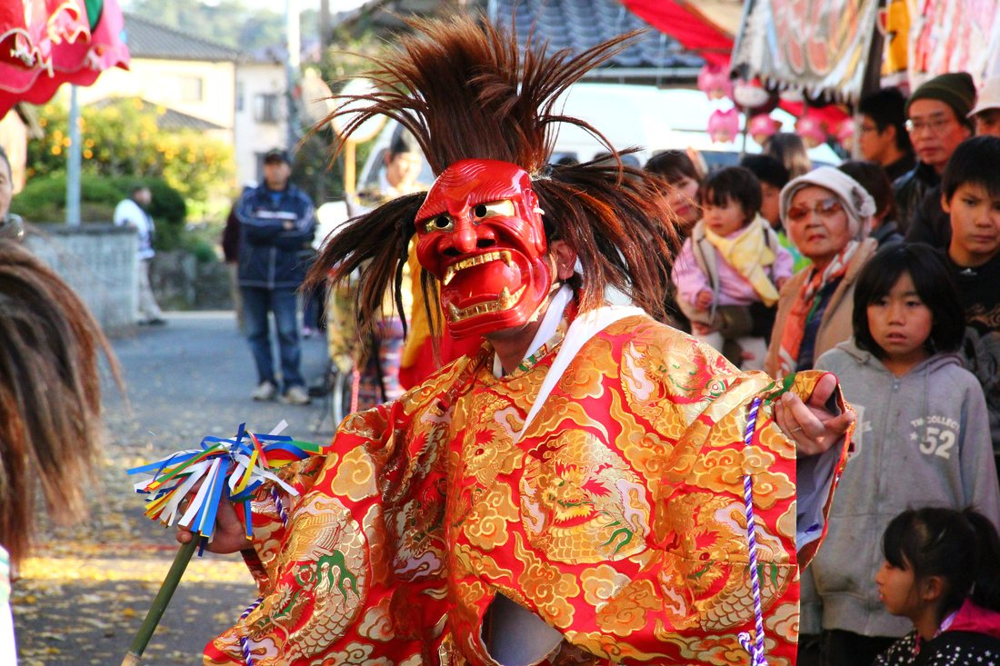
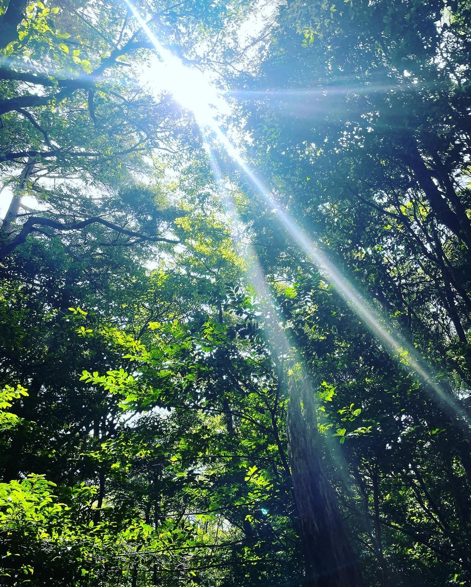
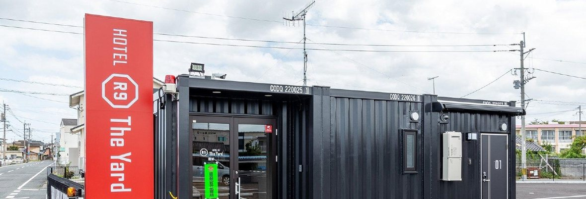
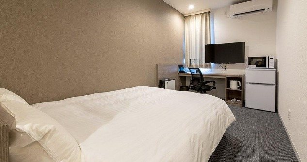
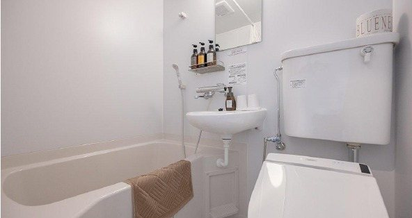
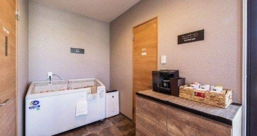

Sacred nature & deep focus. Framed by Mt. Kubote — a historic center of mountain asceticism — your days split between coworking, kagura ritual dance, and a riverside tent sauna.
Three nights, four days, one real day-by-day itinerary — built around free coworking time at ZigZag, a Kagura performance on night one, an optional morning of tent sauna or real-estate touring, and a full day retreat on Mt. Kubote, a historic seat of mountain asceticism a short drive from HOTEL R9.



A new, unique style of accommodation — private rooms built from shipping containers, with a distinct exterior design and enough comfort to make you forget it's a container at all.

All rooms come with a Simmons double bed (W140 × L195), a desk, a chair and Wi-Fi — a secure, private space with enough facilities and function to genuinely unwind after a full day. It's a level of comfort you won't expect from a container: less like camping, more like a compact, well-designed room built for both focus and rest.


